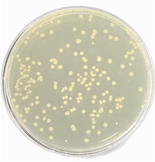

🔬 [실습 03] Competent Cell 제작 및 대장균 형질전환(Transformation) Efficiency 분석
실험 일자: 2026년 6월 4일 | 작성자: 양아영
1. 서론 (Introduction)
본 실험의 목적은 외부 DNA를 스스로 받아들이지 못하는 대장균을 화학적 처리를 통해 수용성 세포(Competent Cell)로 유도하고, 플라스미드 벡터를 세포 내로 대량 주입하는 형질전환(Transformation) 공정을 마스터하는 것입니다. 실험을 통해 얻은 콜로니 수로부터 최종 형질전환 효율(Transformation Efficiency)을 정확히 산출합니다.
- pET28a 벡터: 카나마이신(Kanamycin) 저항성 유전자를 포함합니다. 선택 배지에 카나마이신을 첨가하여 해당 플라스미드를 가진 균주를 선택적으로 분리 배양합니다.
- pUC-GID 벡터: 암피실린(Ampicillin) 저항성 유전자를 포함합니다. 선택 배지에 암피실린을 첨가하여 해당 플라스미드를 확보한 대장균만을 선별 유도합니다.
2. 실험 재료 및 방법 (Materials & Methods)
[주요 재료] LB 배지, 2X TSS Buffer (MgSO4, PEG-6000 포함), DMSO, 멸균수, 얼음, 42℃ 항온수조
① Competent Cell 준비 (Preparation)
- 단일 콜로니로부터 대장균을 37℃에서 O/N(Overnight) 진탕 배양하였습니다 (Preculture).
- 5mL LB 배지에 전배양액 50µL를 접종한 후 본 배양을 수행했습니다.
- 배양액의 흡광도 OD600 값이 0.3 ~ 0.4 수준에 도달했을 때 성장을 급격히 중단시켰습니다.
*원리: 세포 분열이 가장 활발한 대수생장기(Exponential phase)에는 세포막이 극도로 유동적이며 세포벽 구조가 완전히 완고해지지 않아, 화학적 충격(Heat shock)에 최적의 반응성을 나타냅니다.
- 배양액을 15mL 튜브로 옮겨 얼음 위에서 10분간 방치한 후, 4℃ 상태에서 4,000rpm으로 5분간 원심분리하여 세포를 침전시켰습니다.
- 상층액을 날리고 멸균 처리된 차가운 LB 배지 625µL를 첨가해 세포 펠릿을 부드럽게 재부유시켰습니다.
*원리: 후속 단계의 2X TSS 완충액을 최종 1X 농도로 희석하기 위함입니다. 극저온 상태를 유지해야 세포막의 무분별한 투과성 변형을 억제하고 균일한 컴셀 유도가 가능합니다.
- 차가운 상태의 2X TSS Buffer 500µL를 첨가하였습니다.
*원리: TSS 내의 PEG(Polyethylene glycol)는 친수성 고분자로 대장균 주변의 수화층을 강제로 탈수시켜 DNA가 인지질 막 표면에 밀착하도록 유도하며, MgSO4의 2가 양이온은 DNA 뼈대의 음전하를 상쇄·중화하여 막 통과 능력을 향상시키고 외부 분해 효소를 억제합니다.
- 실온 보관된 DMSO 125µL를 첨가하고 가볍게 혼합한 뒤, 차가운 튜브에 100µL씩 정밀 분주하였습니다.
*원리: DMSO는 양친매성 유기용매로 세포막의 소수성 코어에 침투하여 지질 배열을 일시적으로 느슨하게 교란하고 미세 구멍을 형성합니다. 얼리면 응고되므로 실온 보관 상태의 액상을 사용해야 합니다.
② 형질전환 공정 (Transformation)
- 제조된 컴셀 100µL 용액에 1~100µL 부피 내외의 플라스미드 DNA를 첨가하였습니다.
*원리: 외부 DNA의 부피는 컴셀 용액의 1/10을 넘지 않아야 독성 및 염 농도 축적으로 인한 효율 저하를 막을 수 있습니다.
- 얼음 위에서 30분간 조용히 방치하였습니다.
*원리: 저온 조건 하에서 운동성을 잃은 DNA가 세포막 표면에 안정적으로 흡착 복합체를 형성하는 대기 단계입니다.
- 흔들림 없이 42℃ 항온수조에서 정확히 40초간 열 충격(Heat Shock)을 가했습니다.
*원리: 42℃ 순간 고온에 의해 인지질 막이 Fluid 상태로 열리며 유도된 나노 구멍(Transient pore)을 통해 외부 플라스미드가 농도 기울기에 의거해 강제로 세포 안으로 유입됩니다.
- 얼음 위에 즉시 2~5분간 꽂아 급속 냉각을 수행하였습니다.
*원리: 열린 막 구조를 즉각 닫아 진입한 플라스미드의 누출을 봉쇄하고 세포 손상을 리커버리합니다.
- 항생제가 없는 순수 LB 배지 500µL를 첨가하고 37℃에서 1시간 동안 흔들어 키웠습니다 (Recovery).
*원리: 플라스미드 내의 항생제 저항성 단백질(AmpR, KanR)이 대장균 내부에서 실제로 발현 및 축적될 시간을 부여하는 과정입니다. 이 단계 없이 바로 항생제 배지에 깔면 단백질이 없어 전멸합니다.
- 항생제 고체 배지(LB Plate)에 300µL를 분주하여 고르게 도말한 뒤 배양하였습니다.
3. 결과 및 고찰 (Results & Discussion)
① 수리적 효율 계산 수식 (Mathematical Formula)
Transformation Efficiency (TE) = 총 Transformant 수(CFU) / 사용한 DNA 양(µg)
- 총 Transformant 수 = 콜로니 수 × (총 액체 부피 / 도말 부피)
- 사용한 DNA 질량 환산 공식 : ng 단위 ÷ 1,000 = µg 단위 (1 µg = 1,000 ng)

*참고: [그림 1] 항생제 배지 상에서 선별 성장한 pUC-GID 형질전환 대장균 콜로니 형상
② 실제 분석 데이터 계산 과정 (TE Calculation)
- 확보된 최종 콜로니 수(Colony Count) = 219 CFU
- 실험 총 액체 부피 = 100µL(컴셀) + 1µL(DNA) + 500µL(LB) = 601 µL
- 플레이트에 도말한 부피(Spreading Vol.) = 300 µL
1) 실제 총 Transformant 수 (전체 부피 역산):
219 CFU × (601 µL / 300 µL) = 438.73 CFU
2) 사용한 플라스미드 DNA 질량 환산 (µg):
75.7 ng/µL 원액을 100배 희석하여 1µL 투입했으므로 실제 들어간 양은 0.757 ng입니다.
0.757 ng ÷ 1,000 = 0.000757 µg
3) 최종 형질전환 효율 (Transformation Efficiency) 도출:
TE = 438.73 CFU / 0.000757 µg
TE = 5.796 × 10^5 CFU/µg
③ 결과 해석 고찰
산출된 효율 5.796 × 10^5 CFU/µg은 일반적인 화학적 수용성 세포 공정의 유효 신뢰구간에 정확히 안착하는 정상 수치입니다. 플레이트 상의 콜로니 분포가 뭉침 없이 균일하고 오염이 발견되지 않은 점으로 미루어 볼 때, 2X TSS 완충액 배합 공정과 파이펫팅 희석 프로세스가 매우 숙련되고 고순도로 제어되었음을 증명합니다.
홈으로 돌아가기